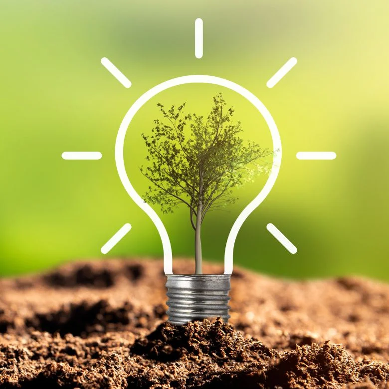

Путей решения проблем может быть несколько:

-
❯
Сокращение выбросов вредных веществ в атмосферу
улучшение технологий производства, переход на более экологичные источники энергии, использование электромобилей и общественного транспорта, сокращение использования пластика и других материалов, которые не разлагаются
-
❯
Охрана природных ресурсов
управление лесами, заповедниками и национальными парками, контроль за вырубкой лесов, охрана водных ресурсов и биоразнообразия, переработка отходов и повторное использование материалов
-
❯
Образование и информирование
проведение образовательных программ и кампаний по экологии, повышение осведомленности населения о проблемах окружающей среды и методах их решения
-
❯
Регулирование государственной политики
принятие законов и нормативных актов, которые обязывают компании и граждан соблюдать экологические нормы и стандарты
-
❯
Сотрудничество между странами
участие в международных экологических программ и проектах, обмен опытом и технологиями, совместная работа по сохранению природных ресурсов и биоразнообразия